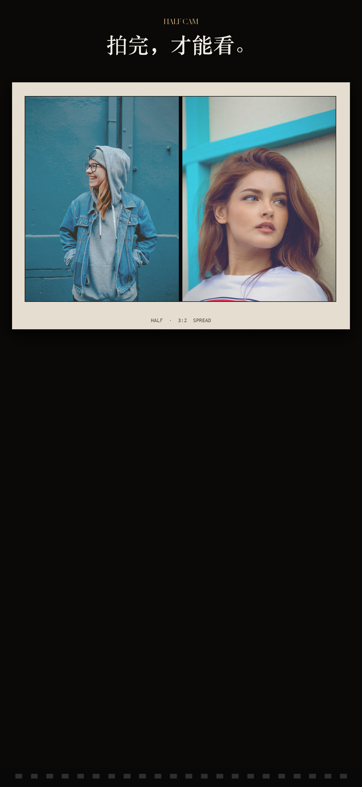

HALF CAM
拍完才能看。一卷拍满，才配打开。
You don’t see it until it’s developed.

HALF CAM 是装在 iPhone 里的半格胶片机。上卷、快门、倒片、暗房——每一步都是真的，不是皮肤。
HALF CAM is a half-frame film camera in your iPhone. Wind. Shoot. Rewind. Develop. Nothing is a skin. Everything is a step.
- 没上卷，快门是死的
- The shutter is dead until you wind
- 拍完没有预览，格子是黑的
- No preview. Shot frames stay black
- 装卷时选定胶片，洗完不能改
- The look is locked when you load the roll
- 相邻两格，自动成一对页
- Two adjacent frames become one spread
免费即可拍完一卷。年卡或买断只是少等、多装。显影走 SpektraLab 光谱引擎。
Finish a full roll for free. Membership is more rolls, longer rolls, and monthly rush tickets. Development uses the SpektraLab spectral engine.
© 2026 xuyue · GNU GPL-3.0-or-later · 独立 App，与任何胶片或相机品牌无关。 © 2026 xuyue · GNU GPL-3.0-or-later · Independent. Not affiliated with any film or camera brand.